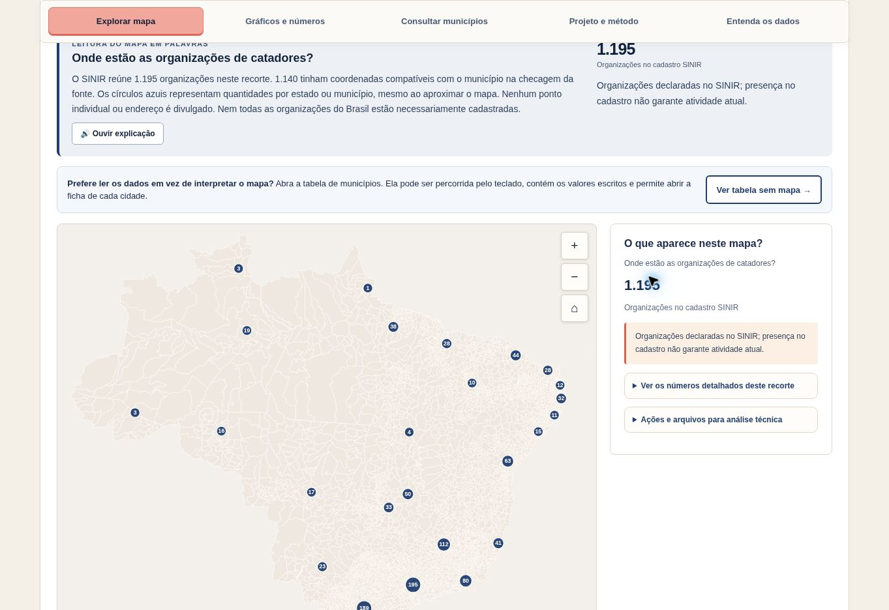

Explorar o mapa
Localize informações por recortes territoriais, investigue padrões e leia explicações que acompanham os indicadores.
Cartografia interativa · Informação pública
Um atlas para compreender a reciclagem no território brasileiro.
Mapas, indicadores e perguntas sobre coleta seletiva, organizações de catadores, gestão de resíduos e desigualdades territoriais. Uma leitura guiada para quem trabalha com políticas públicas — e para quem quer conhecer melhor seu município.
Do dado à leitura territorial
O projeto torna consultáveis informações que frequentemente aparecem dispersas em bases públicas, mantendo visíveis suas fontes, recortes temporais e limitações.

O que você encontra
Não é necessário ter experiência com mapas para começar.
Localize informações por recortes territoriais, investigue padrões e leia explicações que acompanham os indicadores.
Examine tabelas, gráficos e fichas municipais para formular perguntas sobre a gestão de resíduos e a coleta seletiva.
Consulte definições, períodos de referência, escolhas cartográficas e ressalvas para interpretar os dados com cuidado.
Abra a ferramenta, escolha um tema e comece a explorar.